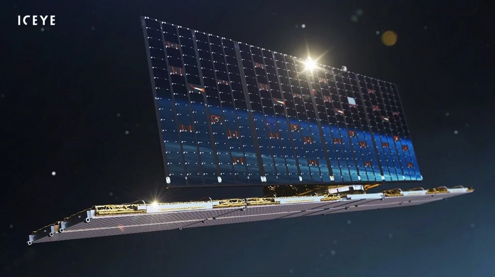
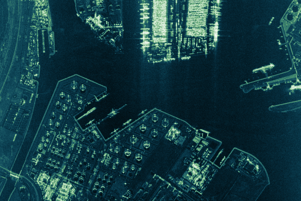
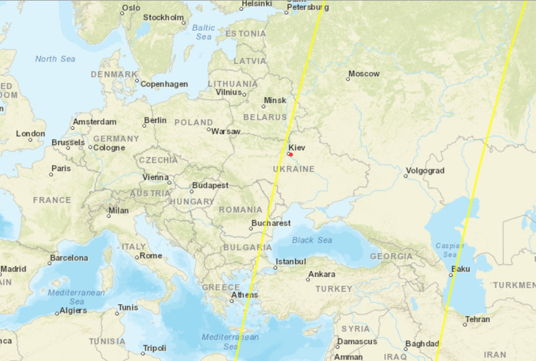
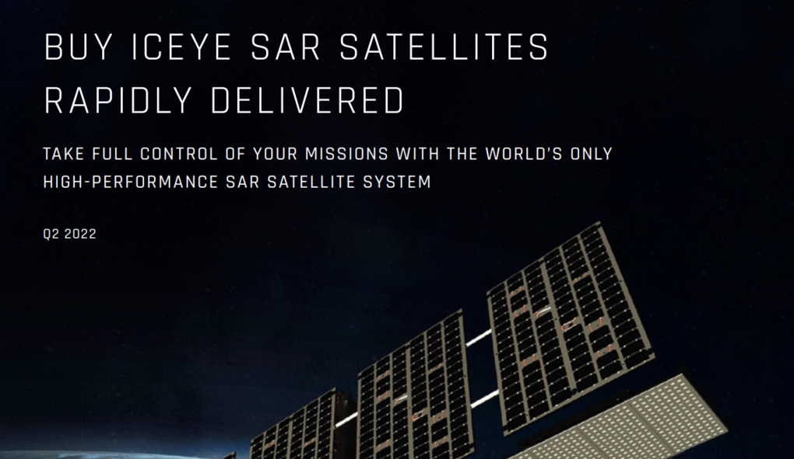

Що може ICEYE? «Супутник Притули», який купили за гроші українців
-
Що за супутник купив Притула?
Фонд Сергія Притули придбав супутник фінської компанії ICEYE . Це стартап, заснований у 2014 році, що займається розробкою мікросупутників.
Це не військові супутники-шпигуни, вони з самого початку призначені для спостереження за поверхнею землі з цивільною метою, для моніторингу танення льодів, передбачення повеней та виникнення лісових пожеж або виявлення місць незаконної риболовлі. Якщо коротко і просто, то:

ICEYE – це радіолокаційні супутники відносно невеликого розміру, масою 85-120 кілограмів (85 кг – це маса без палива), оснащені радарами з активними фазованими гратами Х-діапазону (Х-діапазон – це діапазон частот від 8-12 ГГц з довжиною хвилі від 3,7-2,5 см. Саме такий діапазон частот найчастіше використовується для розробки радарів цивільного чи військового призначення (Ред.). Вони обертаються навколо Землі на низькій навколоземній орбіті, на висоті близько 600 км.
Така орбіта дозволяє робити знімки радіолокації поверхні планети розміром 10 тис. квадратних кілометрів з високою деталізацією (площа АР Крим, наприклад, 27 тис. км2). Від 100х100 до 10х10 кілометрів залежно від режиму сканування і необхідної роздільності.Низька орбіта не дозволяє супутнику рухатися орбітою синхронно з обертанням планети, як би «зависаючи» над поверхнею Землі. Так роблять, наприклад, супутники GPS, але для цього вони повинні перебувати на геостаціонарній орбіті заввишки 35 тис. км.
Подивитися, який саме вигляд має орбіта відносно Землі, можна на сайті n2yo.com або orbtrack.org. Для цього достатньо у формі пошуку вказати Iceye або назву іншого супутника, наприклад «Starlink», «Capella», «Umbra».
Кожен супутник здійснює 15 витків навколо землі за добу, але повторно ту саму точку на поверхні Землі він пролітатиме приблизно через 12 годин.
Що означає «радіолокаційні»? Ці супутники дозволяють отримувати не звичні фото в оптичному діапазоні, а радіолокаційне зображення (для цього і потрібна довга панель внизу, це полотна радара. – Ред.) з високою роздільною здатністю до 25 сантиметрів на піксель.
Така роздільна здатність вважається високою. Навіть супутники компанії Maxar, що роблять фотографії у звичному видимому діапазоні, забезпечують роздільну здатність 30 сантиметрів на піксель (з можливістю програмного збільшення якості зображення до 15. – Ред.).
А супутникові знімки в Google Maps зроблено з роздільною здатністю 50 сантиметрів. -
Про компанію ICEYE
З моменту свого заснування у 2014 році компанія залучила вже 313 мільйонів доларів інвестицій, що зробило її одним із найуспішніших «космічних стартапів».
Починаючи з 2018 до сьогодні на орбіту було виведено угруповання з 21 супутника, 19 з яких зараз функціонують. А до кінця 2022 року планується запуск ще 5. Більшої кількості SAR-супутників з аналогічними можливостями немає ані в інших комерційних компаній, ані у держав.
Найближчими конкурентами є Capella Space (8 супутників Capella) і Umbra Labs (3).
ICEYE – це комерційна компанія, і її супутники призначені для цивільного використання. Проте технічні можливості дозволяють задіяти їх у військових цілях.
SAR означає «радар із синтезованою апертурою» (synthetic-aperture radar). Простими словами, це радар відносно невеликого розміру, який дозволяє отримати деталізацію зображення, як наче б він був на порядки більшим, наприклад, у тисячу разів більшим, ніж насправді.
Як це досягається? Зображення, отримані в кожний момент часу (зняті з трохи іншого кута. – Ред.), накладаються одне на одне, підвищуючи деталізацію. -
Скільки і за що ми заплатили?
Що ж саме купив фонд, і скільки насправді коштує супник ICEYE? Відомо що, на зібрані українцями 600 мільйонів гривень фонд Притули набув ексклюзивне право використання одного супутника до кінця терміну його експлуатації, а також доступу до інших супутників угрупування ICEYE.

Це означає, що ЗСУ можуть повністю розпоряджатися даними щонайменше одного супутника і, ймовірно, отримувати дані з інших супутників. Тобто період отримання «свіжих» знімків може бути більшим, ніж 2 рази на добу.
На сайті Макса Полякова, який брав безпосередню участь у придбанні супутника, зазначається, що ЗСУ можуть отримувати до 36 знімків на добу.
Швидше за все, ексклюзивні права на дані «нашого» супутника поширюються не на всю територію планети Земля, а лише на Україну та цікаві для розвідки території суміжних країн.
Таким чином, для України були придбані не тільки права на використання одного супутника, а й доступ до даних з інших. А також архівні знімки, важливість яких також не варто недооцінювати.
Швидше за все, до контракту включено і якесь програмне забезпечення, яке дозволяє розпізнавати зміни на поверхні землі чи окремі об'єкти.
Тим часом, використовуючи машинне навчання, можна «навчити» програму відрізняти один об'єкт від іншого (наприклад, танк від вантажівки. – Ред.), що прискорить обробку даних.
Такий формат угоди не дає точної відповіді на запитання, скільки коштує один супутник ICEYE, адже ми купили не один, натомість показує важливість саме даних, які він дозволяє отримати.
600 мільйонів гривень (або 16 мільйонів доларів) за контроль над одним супутником та доступ до зображень з інших, це багато чи мало? Відомо, що розвідка США платила 300 мільйонів доларів на рік за 4 супутники Maxar протягом 10 років.
Дивлячись на цю цифру, угода фонду Притули виглядає дуже вигідною.
Також некомерційна організація Halifax International Security Forum оголосила про збирання 10 мільйонів доларів на купівлю для України доступу до супутників компанії Satellogic.
Тобто вартість супутника, купленого для України, цілком адекватна, і ціна відповідає тим даним, які отримали і отримуватимуть ЗСУ.Що можна побачити завдяки «народному супутнику»? Автомобілі та бронетехніку, а також їх сліди на ґрунті.
Тобто навіть недостатньо навіть дуже добре замаскувати техніку, все одно вона залишає сліди, які будуть видно на знімках. До того ж надувні муляжі не зможуть обдурити радар, адже вони розраховані на обман оптичних засобів спостереження.
Звичайно, прочитати заголовок газети чи номер автомобіля не вийде. Але такі можливості – вигадки, а не реальні можливості космічної розвідки. -
Як «народний супутник» допоможе у війні
Очевидно, що в сучасній війні оперативна та достовірна інформація – це величезна цінність. Отримавши у своє розпорядження супутникові дані, командування багаторазово збільшує свої можливості для розвідки та планування операцій.
Переваги супутників ICEYE
Переваги:
- супутник SAR може працювати в будь-який час дня та ночі незалежно від погодних умов;
- отримувати високу роздільну здатність зображень завдяки синтезованій апертурі;
- дозволяє будувати тривимірні карти поверхні;
- засоби маскування на кшталт камуфляжу та маскувальних мереж для радіолокаційних хвиль не становлять проблеми;
- радари, засоби РЕБ та інші випромінюючі в радіодіапазоні пристрої дають на «знімках» характерні смуги засвічення, що дозволяє їх виявляти;
- програмне забезпечення дозволяє в автоматичному режимі виявляти зміни та розпізнавати об'єкти на зображеннях.
Недоліки:
- супутник на низькій орбіті не може постійно спостерігати за тією самою областю Землі. Він пролітає над тією самою точкою кілька разів на добу.
-
Супутник кращий, ніж Байрактар?
Відразу після оприлюднення новини про придбання супутника громадськість почала ставити запитання, що насправді краще, 3 безпілотники Байрактар TB2 або супутник, який купив форд Сергія Притули? Чи може витратити зібрані українцями гроші можна було б інакше?
Якщо порівнювати розвідувальні можливості супутника та 3 безпілотників, то відповідь очевидна. Можливості супутника набагато вищі: він дозволяє вести спостереження за величезною територією, він (навіть у фентезійному світі «Аналоговнет». – Ред.) невразливий для ППО Росії.
Звісно, «народний супутник» неспроможний сам знищувати противника, та його роль – це розвідка стратегічного рівня. А для завдання ударів у нас є безліч інших засобів.
Так само як і Starlink, технологія, яка теж є суто цивільною, а не військовим стандартом зв'язку, ICEYE може стати в умілих руках дуже ефективним засобом для ЗСУ. Незабаром ми побачимо результат цієї покупки.